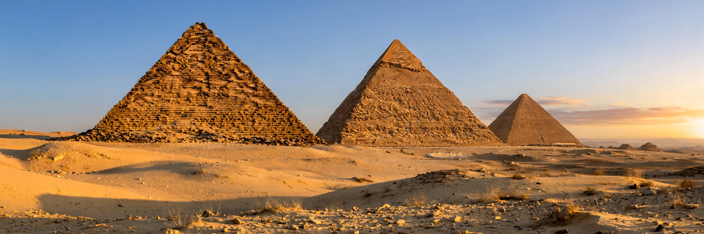

A pyramid is a structure whose outer surfaces are triangular and converge to a single step, point or apex at the top, making the shape roughly a pyramid in the geometric sense. Its base can be polygonal — most famously square, as in the Egyptian pyramids of Giza.

Built mainly during the Old and Middle Kingdoms (c. 2700–1700 BCE) as tombs for pharaohs, Egyptian pyramids evolved from mastabas through the Step Pyramid of Djoser to the true pyramids at Giza — Khufu, Khafre and Menkaure. The Great Pyramid was the world's tallest human-made structure for over 3,800 years.
Nubian pyramids at Meroë are smaller and steeper. Mesopotamian ziggurats are stepped temple towers. Mesoamerican pyramids — at Teotihuacan, Chichen Itza (El Castillo) and Tenochtitlan — served as temple platforms, sometimes for ritual sacrifice. Chinese imperial tombs, such as that of Qin Shi Huang, are earthen pyramidal mounds.
In geometry a pyramid has a polygonal base and triangular faces meeting at an apex; its volume is one-third the base area times the height.